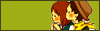
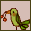
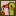

テキスト部分を可変にしました。
極端に小さいサイズには対応しておりませんが、サイドバーにお気に入りなどを表示させてもある程度、見やすくしました。
おまけとして、バナーとファビコン画像をつけております。
バナー 88×31pxと31×31px
 
ファビコン

《ATTENTION!!》
IE6以前はファビコンに対応しておりませんので、IE6以前のブラウザで閲覧されている方は上の画像は表示されません。
IE7からは対応すると思います。
イラスト画像はふわふわ。り様からお借りしました。
『material ふわふわ。り』という表示およびリンクは消さないようにお願いします。
カスタマイズはご自由になさってください。
制限はありません。
その他、不具合などございましたら
CoolWebWindowにお知らせください。